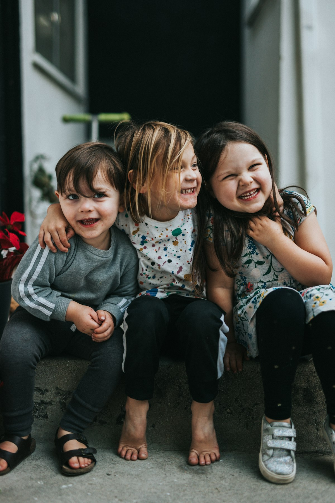
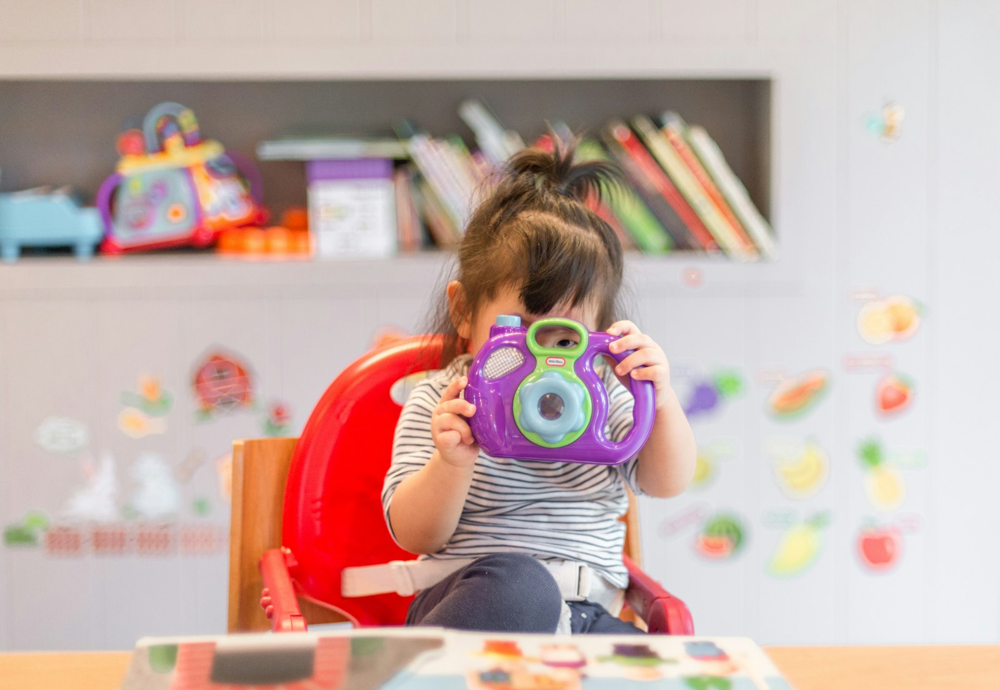

Ms. Elena Morris
Lead Guide, Primary Program
Elena creates calm, engaging lessons that nurture independence and a love for learning.
Experience: 8+ years in Montessori education
We are a Montessori-inspired learning pod dedicated to nurturing curious, confident, and compassionate children in a warm, thoughtfully prepared environment.

Since day one
A calm place to grow

Our Story
Little Roots Montessori began with a simple belief: when children are given time, trust, and a beautiful environment, they reveal an incredible capacity to learn. Our founders envisioned a small, community-centered learning pod where families and educators work together to support each child's natural development.
Today, our purpose remains the same—to cultivate independence, kindness, and a lifelong love of learning. We blend authentic Montessori principles with a warm, home-like atmosphere so every child feels safe, valued, and inspired to grow.
Our vision: to nurture thoughtful, capable human beings who approach the world with curiosity, confidence, and care.
Philosophy
We honor each child as a capable individual with unique interests, pace, and voice.
Calm, orderly spaces and purposeful materials invite focus, independence, and joy.
Children choose meaningful work, building concentration, motivation, and responsibility.
Concrete materials help children explore concepts deeply through movement and the senses.
Children enjoy meaningful freedom guided by clear, respectful boundaries that support community, safety, and growth.
Our Team
Caring guides who observe, inspire, and support each child's journey with patience and expertise.
Lead Guide, Primary Program
Elena creates calm, engaging lessons that nurture independence and a love for learning.
Experience: 8+ years in Montessori education
Toddler Guide
Priya supports our youngest learners with warmth, patience, and joyful sensory experiences.
Experience: 6+ years with toddlers
Kindergarten & Enrichment Guide
Daniel encourages critical thinking, collaboration, and confident readiness for the next stage.
Experience: 7+ years in early childhood
Environment


We would love to welcome your family, show you our classrooms, and answer your questions.
Schedule a Visit